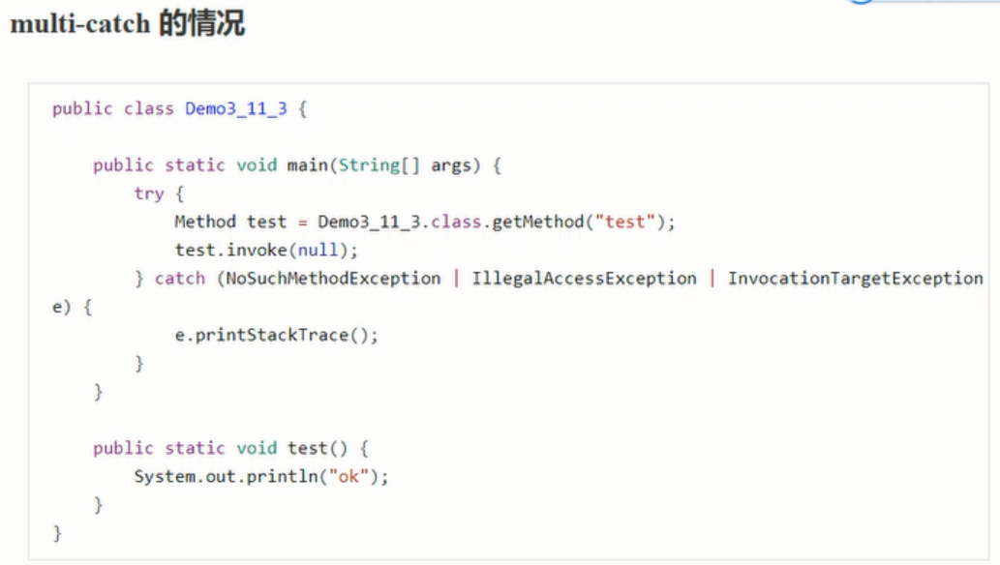

2、12 练习-finally面试题


在finally语句中return，可能会吞掉异常，少了 athrow 字节码（抛出异常）。

finally面试题2：finally对返回值的影响


2、13 synchronized


方法级别的synchronized并不会在字节码中体现。
3、编译期处理
所谓的语法糖，其实就是指java编译器把 *.java源码编译为*.class字节码的过程中，自动生成和转化的一些代码，主要是为了减轻程序员的负担，算是java编译器的额外福利。
注意，一下代码的分析，借助了javap工具，idea的反编译功能，idea的jclasslib 等工具。另外，编译器转换的结果直接就是class字节码，只是为了便于阅读，给出了几乎等价的java源码，并不是编译器还会转换出中间的java源码，切记。
3、1 默认构造器

3、2 自动拆装箱

3、3 泛型集合取值


通过反射读取 形参的泛型信息（只能读取到形参的泛型信息和返回值的泛型信息）

3、4 可变参数


3、5 foreach 循环


3、6 switch 字符串


3、7 switch 枚举


3、8 枚举类


3、9 try-with-resources


3、10 方法重写时的桥接方法


其中，synthetic bridge 是JVM被称为桥接方法，仅对java虚拟机可见，并且与原来的public Integer m() 没有命名的冲突，可以用下面的反射代码验证：

3、11 匿名内部类